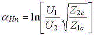
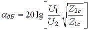
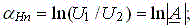
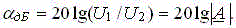
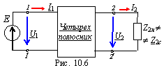
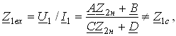
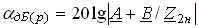

3. ПОСТОЯННАЯ ОСЛАБЛЕНИЯ ЧЕТЫРЕХПОЛЮСНИКА
Постоянную ослабления согласованно-нагруженного несимметричного ЧП (см. рис. 10.5, а) в неперах (Нп) и децибелах (дБ) определяют по формулам:
; .
Для симметричного ЧП, у которого Z1с = Z2с = Zс = Z2н,
 

При несогласованном включении ЧП с нагрузкой (Z2н ( Z2выx и внутреннем сопротивлении источника сигнала Zи = 0, рис. 10.6) входное сопротивления ЧП на зажимах 1 - 1'

а рабочий коэффициент ослабления

зависит не только от частоты входного напряжения, но и от величины и характера нагрузки.